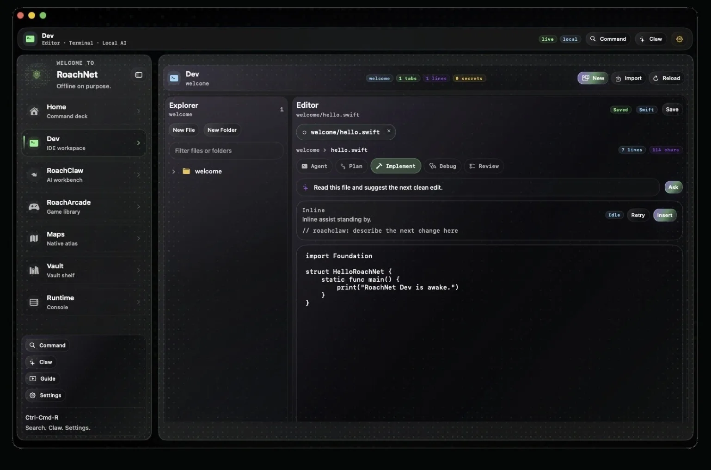
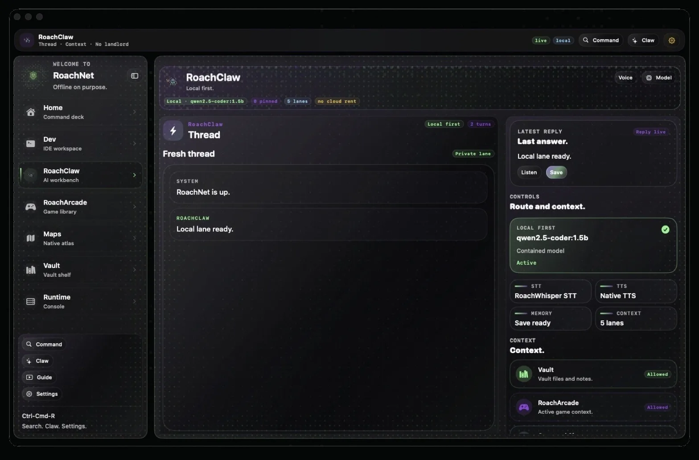
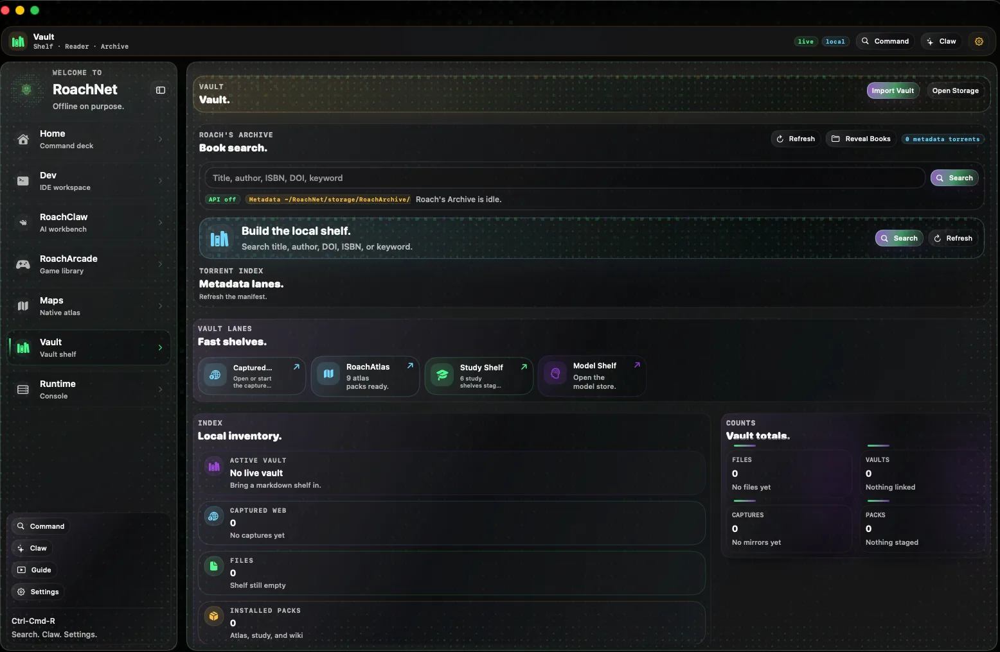
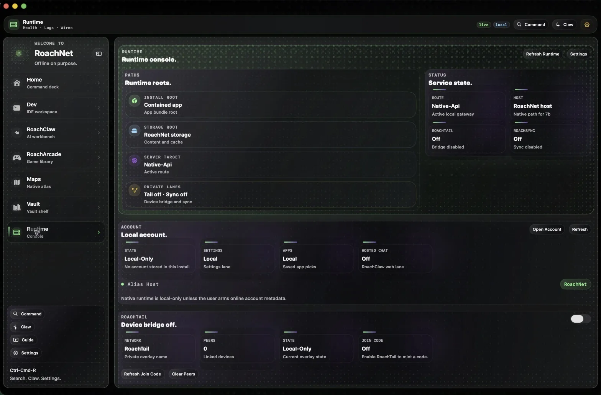

RoachNet
Everything you need, where you left it.
RoachNet organizes local AI, code, maps, media, ROMs, and your vault in one place, while RoachClaw is always one shortcut or voice request away. Offline on purpose, not by chance.
Built for Apple Silicon first. Pair it with RoachNet iOS and your notes and documents come with you. Made for the nights when the router gives up and you'd like your files to carry on regardless.
brew update && brew tap --force RoachWares/roachnet && brew install --cask roachnet
Mac only. Browsers aren't allowed to open Terminal, so this downloads a tiny helper that opens it for you and runs the Homebrew install. Read it first if you like — we'd think more of you.
--:-- --
Checking connection
Checking free space
Rough browser estimates until the app is installed. The real numbers live in RoachNet.
Mission
Offline on purpose. Not by chance.
One folder on your machine. Easier to trust, easier to move, and still useful when the network stops pretending.
Your models stay on your hardware.
Open RoachClaw anywhere and share vault or project context only when you decide to. No API keys, nothing phoning home.
One folder. Take it anywhere. Delete it in a second.
Everything lives under ~/RoachNet. Easy to move, easy to back up, easy to wipe, easy to trust.
Quick when called. Quiet when not.
Open it, do the thing, close it. RoachNet is a tool, not a place to lose an afternoon.
The app
Screens that do real work.
Everything in one place. No digging through tabs that refuse to load without a connection.
 v1.0.5
v1.0.5
Home
The command grid.
Start a new chat or project, open a map, or browse your vault. Everything you need is right here, ready to go.

v1.0.5
Dev
The native coding workspace.
Dev is still a work in progress, but it's already a fine place to start a project, open a file, and get going. RoachBrain remembers your project, RoachClaw sits in as your pair, and you get to think about the code instead of the setup.

v1.0.5
RoachClaw
The local AI workbench.
Run models on your own machine, switch between them, see exactly what's loaded, and pull in project context without playing prompt telephone.
Give it your projects and documents and it'll help with code, notes, and everything in between — always a shortcut or a spoken word away.

v1.0.5
Vault
Your library, offline.
Notes, maps, courses, books, saved web pages, music, video, and anything you've installed from RoachNet Apps. Part library, part workshop, entirely yours.

v1.0.5
Runtime
Where the real work happens.
The engine room. See what's actually running, what's downloading, and where a problem is hiding — without opening a single log file by hand.
Where RoachNet fits
Where it actually helps.
RoachNet is for people who want their files, tools, and context to work when the internet doesn't. If you like owning your own hardware and your own data, you're in the right place.
Docs, stems, notes, and AI in one window instead of the usual eleven-tab disaster. Still there when the studio Wi-Fi taps out mid-take.
Pack it like a suitcase. Airplane mode changes nothing.
Internet down, service down, whatever. Your files, models, maps, and vault are exactly where you left them.
What’s inside RoachNet
Things worth installing.
Wikipedia, a map pack, a medical reference, an app from RoachNet Apps — it all lands in the same place, ready when you need it.
Offline atlases, region by region. Add RoachAtlas GPS on the iOS app and you're navigating with no signal at all.
Remedies, treatments, and medical references, offline. For people who prepare instead of trusting search results under pressure.
API references, command-line guides, and machine learning material. No hunting for docs at the exact moment you need them.
Start with the top 100,000 articles, go all the way to the whole encyclopedia, or land somewhere in between. Offline and searchable.
What RoachNet runs for you
What's under the hood.
The window is the nice part. The engine underneath is the good part.
Everything RoachNet needs lives inside ~/RoachNet. One folder, not a confetti trail of files across your home directory.
A local AI assistant for your code, your notes, and everything in between. One shortcut or one spoken word away. No API keys, no cloud required.
Write code, manage projects, run commands, and get AI help in a workspace that picks up your habits as you go.
Planning a trip in your notes? Open the map pack, ask RoachClaw about the forecast and the best route, let RoachAtlas handle the turns. Same app, no tab-hopping.
Download
Get it on your machine.
Installer or Homebrew, the ending is the same: RoachNet on hardware you own, in a folder you can back up, move, or delete in one drag.
Yes, there's a brew formula.
Setup app or Homebrew — both land in
~/RoachNet, so the whole thing stays in one folder you can carry anywhere.
iPhone & iPad · SideStore + AltStore
RoachNet iOS. Your chats and vault, synced over RoachTail, plus app installs and a live look at what's running — all from your pocket.
Download RoachNetiOS-v0.1.5-unsigned.ipa
Source · RoachWares
Read the code that makes all of this work.
View latest GitHub release
Support
Keep it sharp.
Independent software stays alive the same way independent records do: somebody keeps showing up, fixing the mix, and making the next one better.
RoachNet is made by RoachWares LLC — one person, one company, no committee. It exists because we wanted it to exist.
A team of one means fewer arguments about direction and more time spent on the things that matter. It also means support from people like you lands directly.